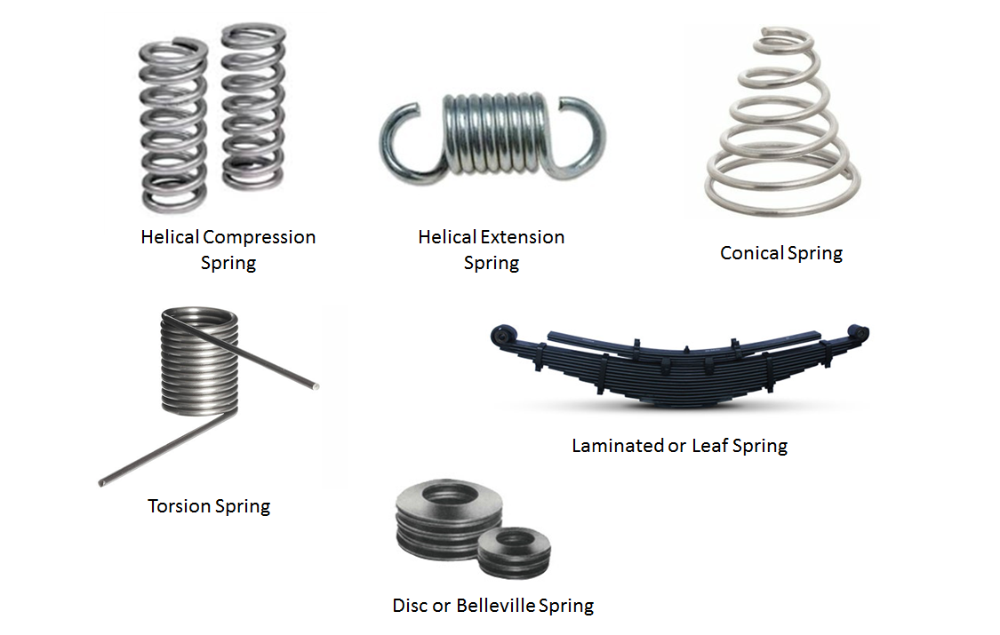

Coil Spring Design Basics
2020-05-06 13:27:56
- TAG :
The spring is a kind of elastic element widely used in the mechanical and electronic industries. The spring can produce large elastic deformation when loaded, and convert mechanical work or kinetic energy into deformation energy. After unloading, the spring deformation disappears and returns to In its original state, it also transforms the deformation energy into mechanical work or kinetic energy. The ratio of spring load to deformation is called spring stiffness. The greater the stiffness, the harder the spring.
1. the role of the spring
Cushioning and vibration reduction. Such as vibration damping springs under cars and trains, buffer springs for various buffers, etc .;
Control the movement of the mechanism. Such as valve springs in internal combustion engines, control springs in clutches, etc .;
Store and output energy. Such as clock springs, bolt springs, etc .;
Measure the force. Such as spring scales, springs in load cells, etc .;
2. the classification of springs
According to the nature of the force, the spring is divided into: tension spring, compression spring, torsion spring and bending spring.
Tension springs (abbreviated as tension springs) are helical springs that withstand axial tension. Tension springs are generally made of round cross-section materials. In the absence of load, the coils of the tension spring are generally tight without gaps.
Compression springs (referred to as compression springs) are helical springs that are subjected to compressive forces. The materials used are mostly circular in cross-section. They are also made of rectangular and multi-stranded steel coils. There is a certain gap between the rings. When the external load is applied, the spring shrinks and deforms, storing deformation energy.
The torsion spring belongs to the coil spring. The torsion spring can store and release angular energy or statically fix a device by rotating the force arm about the central axis of the spring body. The ends of the torsion spring are fixed to other components, and when the other components rotate around the center of the spring, the spring pulls them back to the initial position, generating torque or rotational force.
There are also two unusual air springs and carbon nanotube springs;
Air spring is a kind of non-metallic spring that adds compressed air in a flexible sealed container and uses the compressibility of air to achieve elasticity. It can be used in the suspension device of high-end vehicles to greatly improve the smoothness of the vehicle and greatly improve the vehicle The running comfort, so the air spring has been widely used in automobiles and railway locomotives.

3. The material and allowable stress of the spring
Springs are often subjected to alternating and impact loads in work, and require large deformation, so the spring material should have high tensile strength, elastic limit and fatigue strength. The process must have certain hardenability, not easy to decarburize, and the surface quality is good.
4. the manufacture of springs
The manufacturing process of the coil spring includes: coiling, hook making, or finishing of the end face ring, heat treatment, and process performance test.
For mass production, it is rolled on a universal automatic coil spring machine; for single piece and small batch production, it is made on an ordinary lathe or by hand. When the diameter of the spring wire is less than or equal to 8mm, the cold coil method is commonly used, and heat treatment is required before coiling, and low temperature tempering is required after coiling. When the diameter is greater than 8mm, the method of hot coiling (hot coil temperature 800 ℃ ～ 1000 ℃) is adopted. After hot coiling, it is quenched and tempered at medium temperature. After the spring is formed, surface quality inspection should be carried out. The surface should be smooth, free from scratches and decarburization. Such defects; springs subjected to variable loads must also be subjected to surface treatment such as shot peening to improve spring fatigue life.
5. The end structure of the spring
In addition to the effective number of compression springs participating in the deformation n, in order to make the compression spring work evenly, ensure that the spring center line is perpendicular to the end surface, the spring has 3/4 to 7/4 turns at each end and works as a support. It does not participate in the deformation, so it is called a dead ring or a supporting ring.
There are hooks at the ends of the tension spring for easy installation and loading. There are four types of commonly used end structures; semicircular shackles and round shackles are easy to manufacture and widely used, but because of the large bending stress at the transition point of the hook, it is only suitable for springs with a diameter d≤10mm. Adjustable and rotatable hooks are well loaded and can be turned to any position for easy installation.
6. Stress calculation of spring
▲ Force analysis of compression spring
Figure (a) is a cylindrical helical compression spring, which bears the axial working load F. The cross-sectional method analyzes that the spring wire section is subjected to shear force F and torque T = FD / 2. The shear stress caused by the torque is:
If the effect of shear stress caused by the shear force F and the influence of the spiral curvature of the spring wire are considered, the maximum shear stress t occurs on the inner side of the spring (b), and its value and strength conditions should be:
Where C——convolution ratio, C = D / d, can be selected according to Table 1.
K-spring curvature coefficient
K can also be found directly from Table 2. From the table, the larger C is, the smaller the influence of K on t;
F-the working load of the spring N; D-the diameter of the spring in mm; d-the diameter of the material in mm.
In Equation 1, the maximum working load of the spring, F2, is substituted for F, and the formula for calculating the diameter of the spring wire according to the strength condition can be obtained:
Tension spring strength calculation method is the same as compression spring
7. the spring is not in place and the cause of failure
In actual work, we often encounter that the spring cannot push the moving object to the set position, which means that the calculated free length of the spring becomes shorter. The main reason is that there is no initial compression treatment, that is, a manufactured spring is compressed with a large force to its compressed height or parallel height (if necessary), and it cannot be restored to its original after release. Of free length operation. The amount of shortening is called "initial compression". Generally, after repeating 3-6 times of compression, the length is no longer shortened, that is, the spring is "positioned". After initial compression, the spring is permanently deformed.
8. Spring precautions
In actual work, even if the compression spring is subjected to a force beyond the elastic limit of the material, it should be able to maintain its working length. Therefore, the length of the finished spring should be equal to the calculated length of the spring plus the initial compression, to avoid the spring from being in place, so as to avoid dangerous stress when the coil is tightened, resulting in abnormal and abnormal spring indicating line. During the heat treatment process of the finished spring, especially after the hardening and tempering process, the workpiece must be placed horizontally (horizontal) in the furnace to prevent the spring from being shortened due to its own weight and the operation not in place.